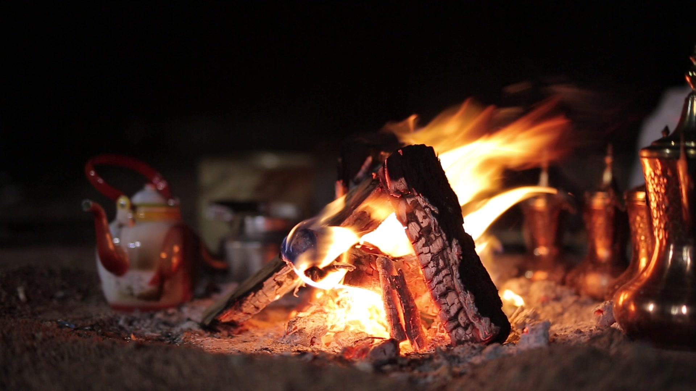
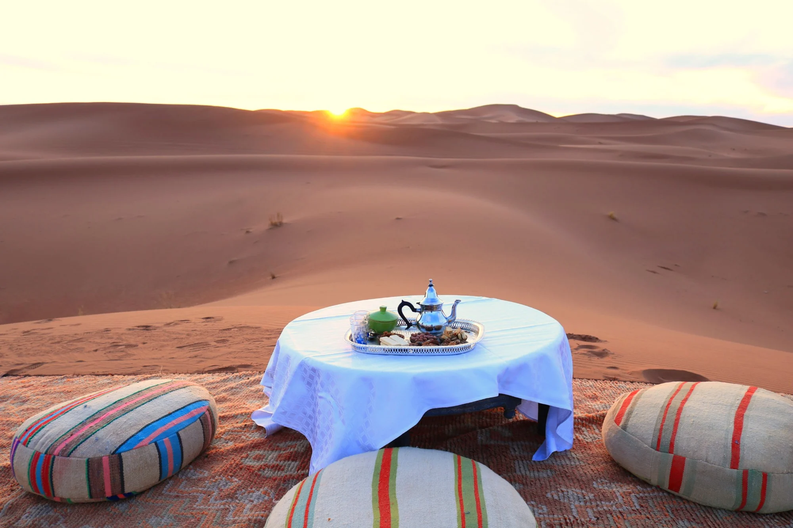
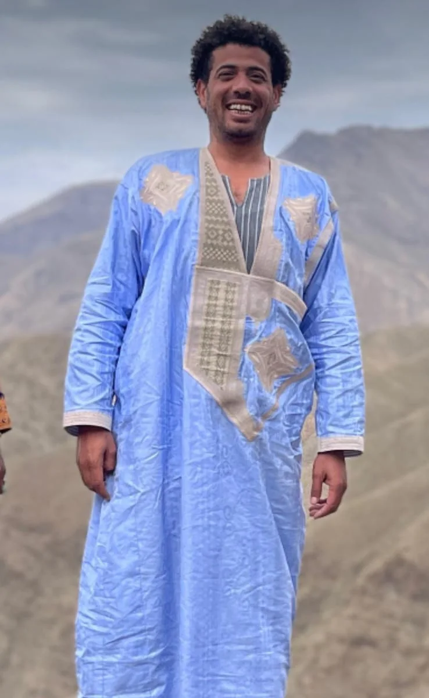
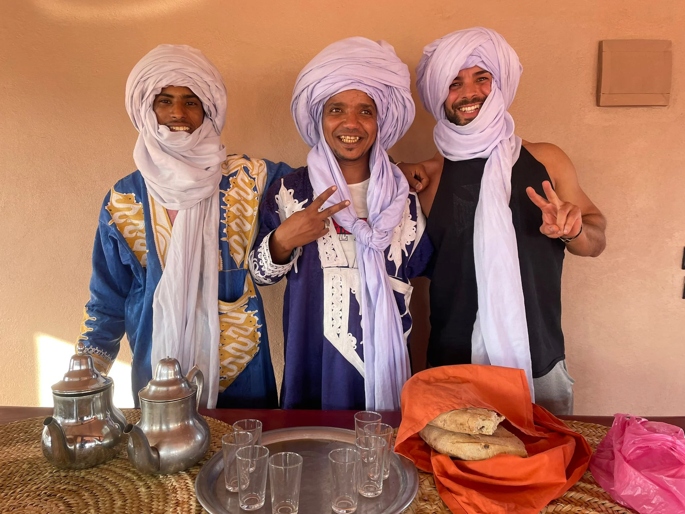
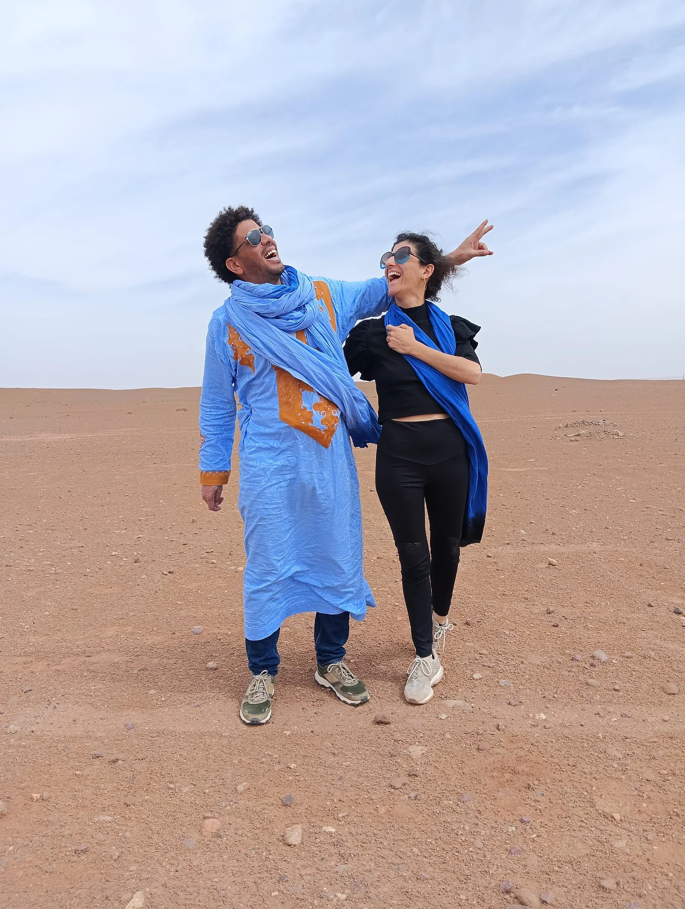
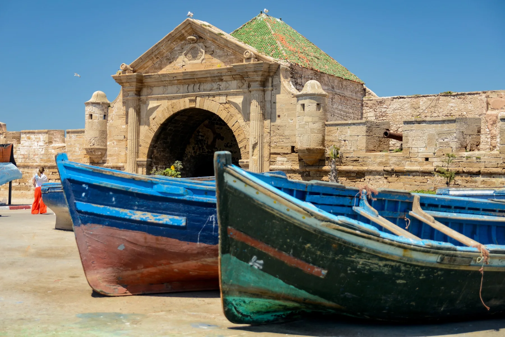

Marruecos,
desde dentro.
Viajes diseñados por personas que conocen el país, sus caminos y a su gente.
Un viaje bien hecho empieza mucho antes de llegar.
Detrás de una ruta hay decisiones: cuánto avanzar, dónde quedarse, con quién trabajar y qué merece tiempo. Xènia y Abdoul llevan años creando y coordinando viajes en Marruecos, con una operación local construida alrededor de personas y relaciones reales.
Para agencias, somos un equipo en destino. Para viajeros, un punto de partida para dar forma al viaje que quieren hacer.
Conoce nuestra historia ↗Para quienes viajan.
Y para quienes hacen viajar.
Conectamos la experiencia directa en Marruecos con viajes bien cuidados, de principio a fin.

No se trata solo de dónde vas.
Sino de cómo lo vives.

El sur de Marruecos · Al caer la tarde
Marruecos puede recorrerse de muchas maneras. Nosotros preferimos hacerlo con tiempo para mirar, conocer y conectar.

Erg Chigaga,
nuestra raíz.
Abdoul nació en el Sahara y vivió allí hasta los siete años, entre las dunas, las estrellas y la vida nómada. Hoy es propietario de su propio campamento en Erg Chigaga.
Por eso, Chigaga no es una parada más. Es un lugar que forma parte de su historia y que comparte desde el conocimiento de quien lo llama hogar.
Conoce nuestra historia ↗Un país. Muchas formas de sentirlo.
Rutas de referencia que podemos adaptar al ritmo, los intereses y la manera de viajar de cada persona o grupo.


Tú conoces a tus clientes.
Nosotros conocemos Marruecos.
Trabajamos como partner local para diseñar y coordinar viajes, grupos privados y experiencias en el país. Estamos cerca antes, durante y después de cada recorrido.
Descubre la colaboración ↗
Una ruta es un comienzo.
No una obligación.
Podéis partir de uno de nuestros itinerarios o empezar con una idea, unas fechas y el tiempo disponible. Diseñaremos una propuesta que encaje con vuestro ritmo y con la operación real del viaje.
Planear un viaje ↗Dos caminos.
Una manera de viajar.
Desde 2009, Xènia y Abdoul crean y coordinan viajes por Marruecos. Su historia une el conocimiento del territorio, la experiencia de vivir y trabajar en el país, y una red de personas construida a lo largo de los años.
Lee nuestra historia ↗

El horizonte también forma parte del viaje.
Un paisaje abierto, el silencio y espacio para mirar.


Cuéntanos qué tienes en mente.
No necesitas tener el viaje decidido. Si eres agencia, cuéntanos qué tipo de experiencia quieres ofrecer; si viajas, qué te gustaría vivir.